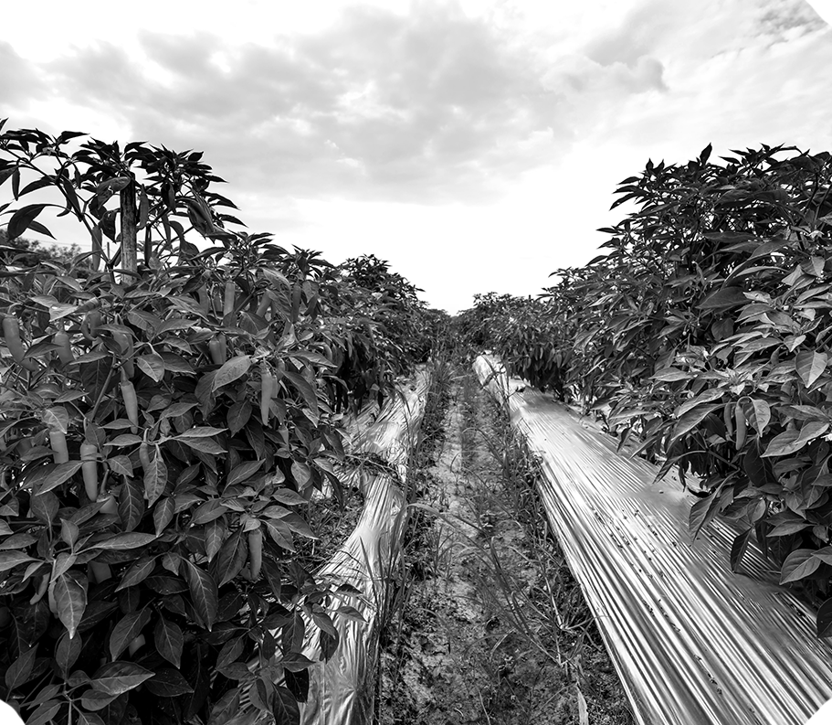
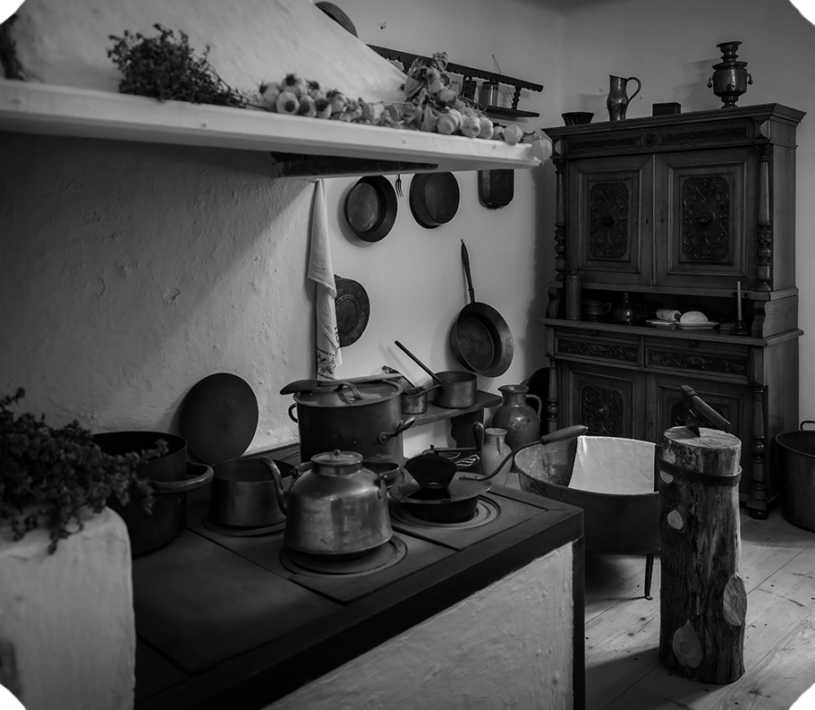
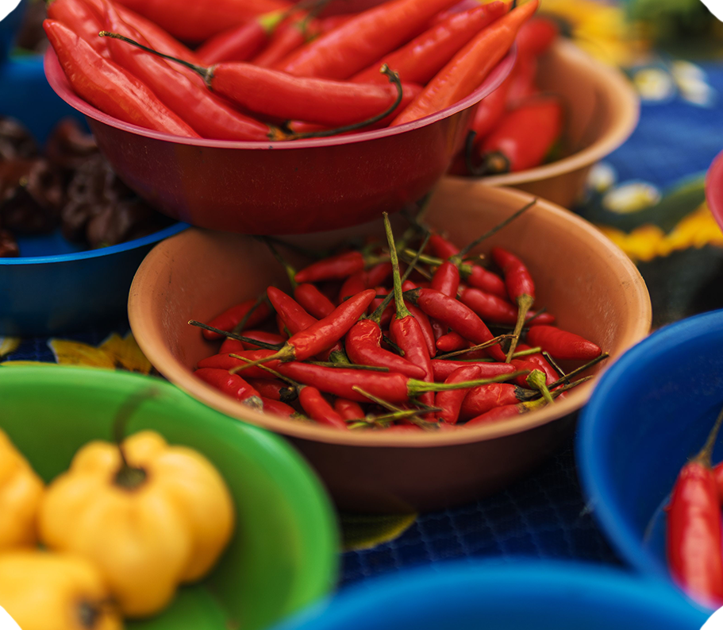
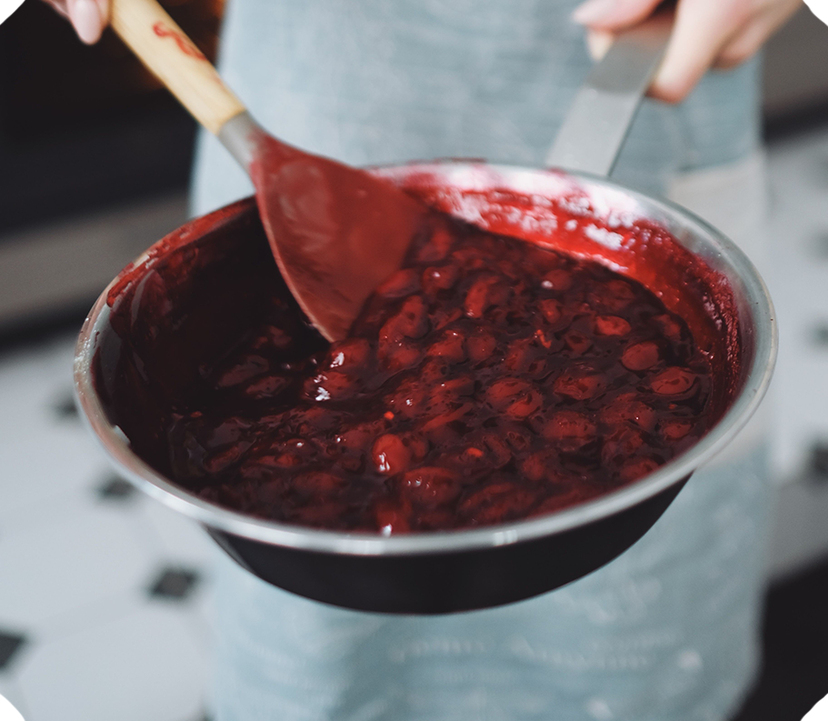
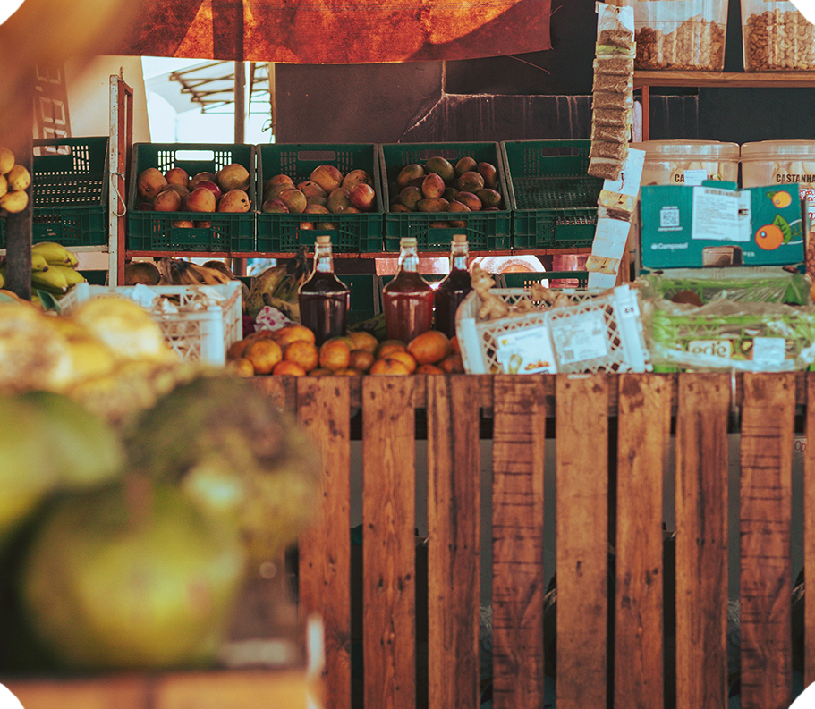
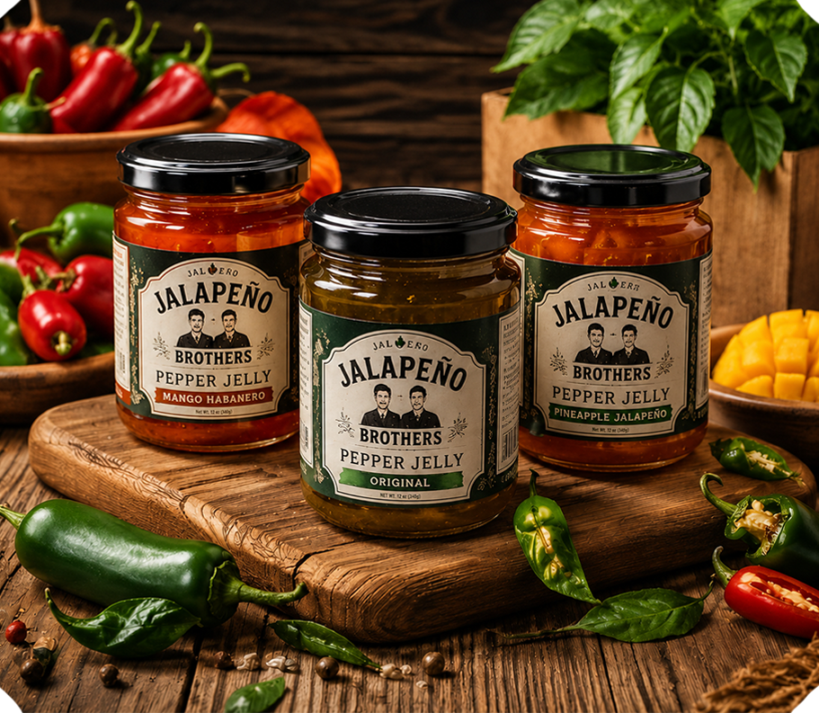

1905 - The Start
It all started on a small family farm, where generations of hard work
taught us that great flavor begins with great ingredients. Our family
learned how to grow, select, and care for the peppers that became part
of our everyday lives.
The farm was more than a place to grow food.
It was where we learned the value of patience, care, and doing things the
right way — lessons that would stay with our family for generations.

1932 — The Family Recipe
As the years passed, our knowledge grew with every harvest. Recipes,
techniques, and family traditions were shared around the kitchen table,
with every generation adding something of its own.
We learned that
the best recipes don't always come from a cookbook. Sometimes they're built
through years of experimentation, shared meals, and a little bit of family
instinct.

1967 — Finding the Heat
Our fascination with peppers eventually grew beyond the farm. We began
experimenting with different varieties, discovering how each one could
bring its own flavor, aroma, and level of heat.
By combining peppers
with sweetness and acidity, we started finding the balance between bold heat
and unforgettable flavor — an idea that would shape our recipes for years to come.

1989 — The First Jelly
One of our kitchen experiments eventually became something completely
new: pepper jelly. We wanted to capture the bold character of our favorite
peppers while creating something sweet, balanced, and easy to enjoy.
After plenty of experimenting, we found the combination we were looking for.
It quickly became a favorite among family and friends, and the idea of
turning it into something bigger began to take shape.

2004 — Jalapeño Brothers
Two brothers decided to take the family tradition beyond the farm and into
something of their own. With old family recipes, new ideas, and plenty of
love for peppers, Jalapeño Brothers was born.
The name was new, but
the foundation wasn't. Everything we had learned from the generations
before us became part of the brand — with a fresh approach and a whole
lot more heat.
2015 — Beyond the Farm
What started with a few homemade jars began making its way into more
kitchens and onto more tables. We continued developing new recipes while
staying close to the ingredients and traditions that started it all.
Every new flavor became another opportunity to share our family's passion
for bold, handcrafted food with people beyond our own kitchen.

2026 — The Story Continues
Today, Jalapeño Brothers carries more than a century of family influence
into every recipe we create. What began on a small farm has grown into
a brand built around bold peppers, handcrafted flavors, and plenty of
character.
But the story isn't finished. We're still experimenting,
creating new flavors, and finding new ways to bring a little more heat to
the table.
